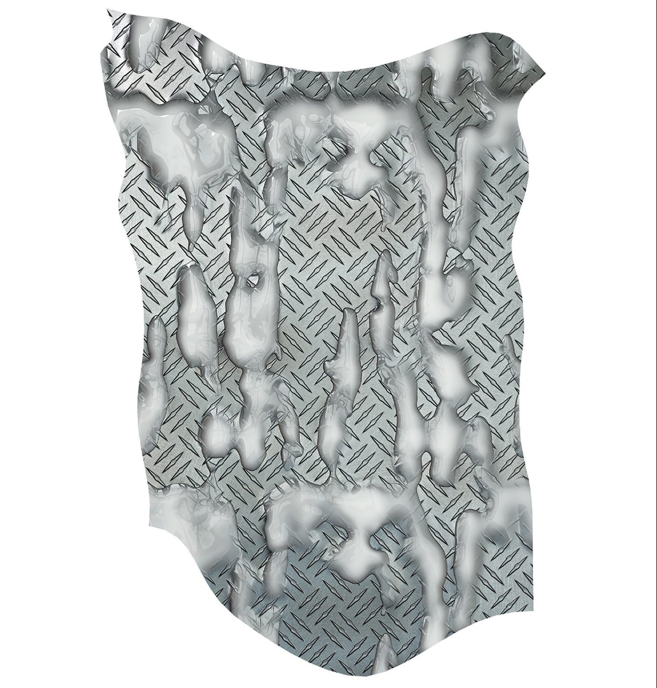
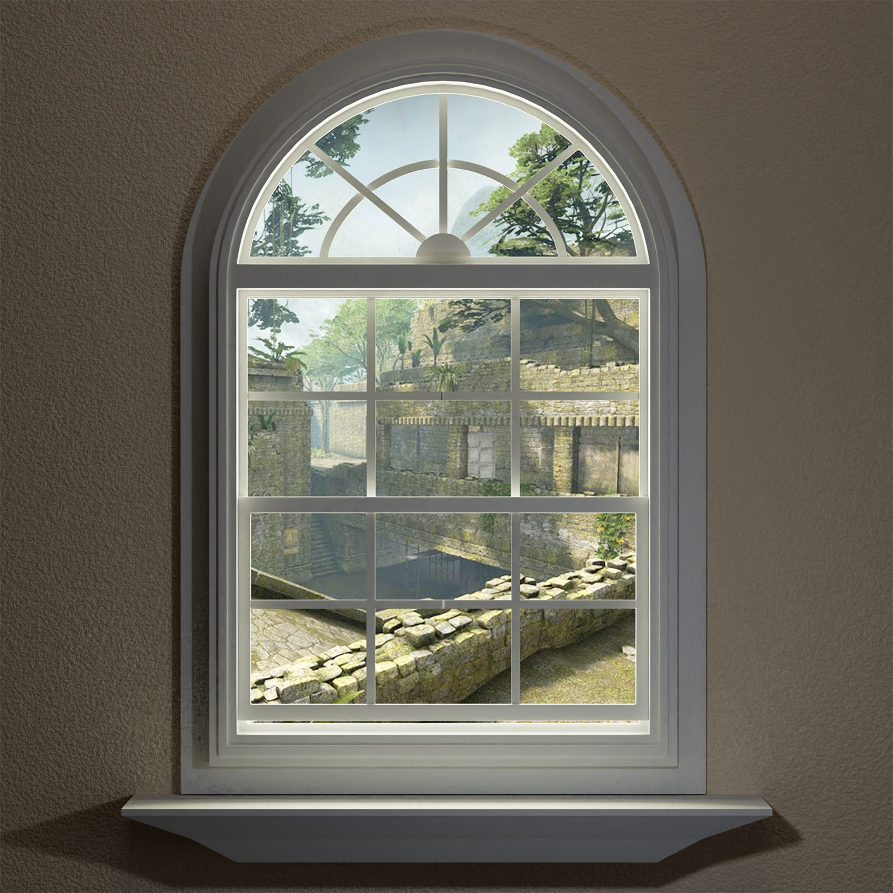

The VR work takes place inside a modest suburban bedroom, where a bed-bound, reclined character is entangled in linen bed sheets.
L’œuvre en réalité virtuelle se déroule dans une modeste chambre de banlieue, où un personnage alité, incliné, s’enchevêtre dans des draps de lin.
The work involves a dive into the character’s thoughts and fantasies, as the viewer shares an intimate perspective of the character’s voyage into a world of ennui. An ordinary window displays surreal, dreamlike landscapes and prophetic visions in the distance, as long stretches of time elapse.
L’œuvre propose une plongée dans les pensées et les fantasmes du personnage : le spectateur partage une perspective intime sur son voyage vers un monde d’ennui. Une fenêtre ordinaire dévoile au loin des paysages oniriques et surréels ainsi que des visions prophétiques, tandis que de longues plages de temps s’écoulent.


An ordinary window displays surreal, dreamlike landscapes and prophetic visions in the distance.
Une fenêtre ordinaire dévoile au loin des paysages oniriques et surréels ainsi que des visions prophétiques.